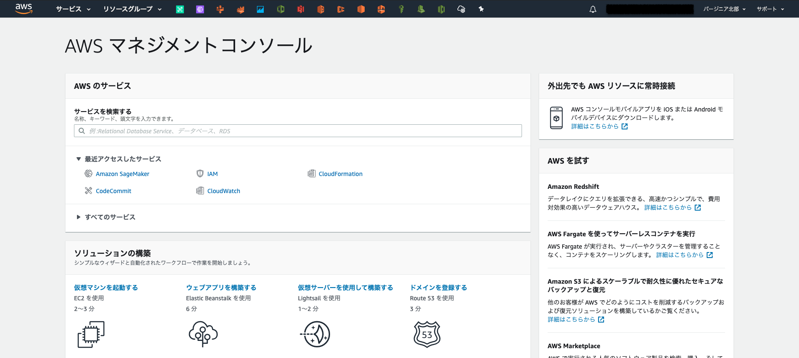
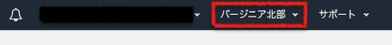
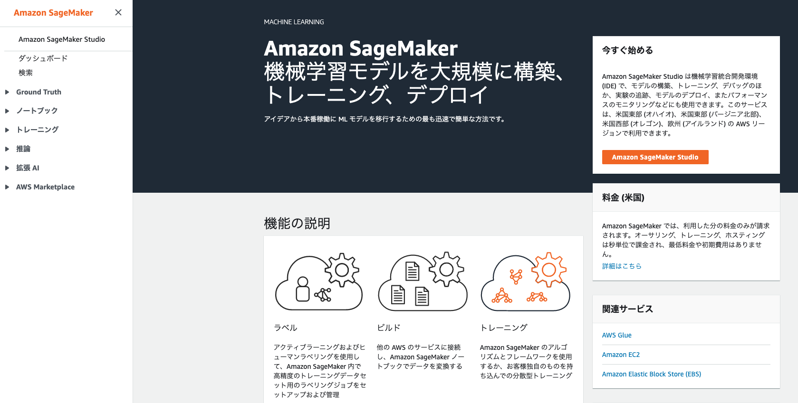
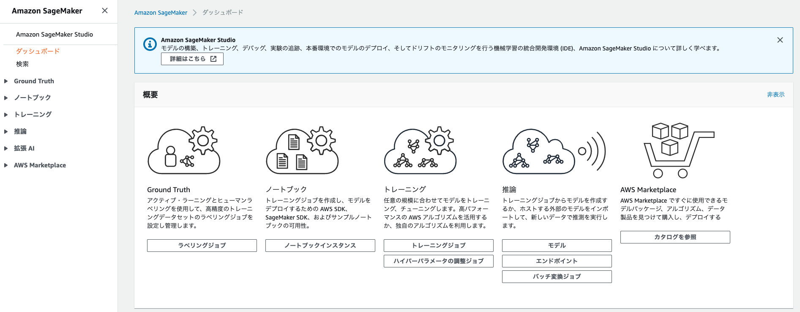

[第5回] Amazon SageMaker の基本的な使い方を理解する (1)¶
はじめに¶
Amazon SageMaker を使って実際に「開発」を始めるまでの準備作業の流れがわかる。
Amazon SageMaker を使って、「開発」「学習」「推論」の流れがわかる。
実際に Amazon SageMaker を使う¶
「機械学習モデルの構築およびトレーニング、デプロイ with Amazon SageMaker」 という簡単なチュートリアルがありますので、これをベースに進めたいと思います。
「自分が今何をしているのか」、「背後でどのような処理が行われているか」を整理しながら解説を進めていきます。 前回の記事で示した「開発」「学習」「推論」に沿った流れとなりますが、より細かい手順を示す点に注意してください。
チュートリアルの概要¶
Amazon SageMaker を使って、「開発」「学習」「推論」の一連の流れを体験できる。
XGBoost と呼ばれる機械学習アルゴリズムを利用して、二値分類を行う。
学習・推論に利用するデータは、カリフォルニア大学アーバイン校が公開しているオープンデータを利用する。
利用するデータは「Bank Marketing Data Set」と呼ばれる「ポルトガルの銀行マーケティングキャンペーン」のデータである。
データには大きく2種類の情報が記録されている。
データ 1：「年齢」や「職業」といった銀行の顧客の属性情報など
データ 2：マーケティングを行った結果、その顧客が実際に「預金証書 (CD)」を申し込んだか否かのフラグ
「データ 1」から機械学習アルゴリズムによって何らかのパターンを見出して、これから営業をかける顧客 (「データ 2」が未知の顧客) が「預金証書 (CD)」を申し込んでくれそうかどうかを分類する機械学習モデルを構築する。
「預金証書 (CD) を申し込んでくれそうな顧客」を重点的に営業をかけることによって営業活動を効率化することができる。顧客名簿の上から順に営業をかけるよりも顧客を獲得できる可能性が高まる。
今回の記事で実施すること¶
工程 |
実施内容 |
連載回 |
|---|---|---|
開発 |
AWS マネジメントコンソールにログインする |
第5回 |
ノートブックインスタンスを作成する |
第5回 |
|
学習・推論に利用するデータを格納するための S3 バケットを作成する |
第5回 |
|
学習・推論に利用するデータを準備する |
第5回 |
|
学習用のコードを開発する |
第5回 |
|
学習 |
第6回 |
|
推論 |
第7回 |
前提¶
今回の記事の内容を実施する際の前提を下記に示します。
本番環境 (商用サービスが稼働する AWS アカウント) ではなく、開発環境や検証環境で実施する。
「AWS アカウントの取得」と「IAM ユーザの作成」を未実施の場合は、下記の Amazon SageMaker の開発者ガイドを参照して実施する。 IAM ユーザに管理者権限 (AdministratorAccess) を付与する手順となっているが、実際の業務では必要最小限の権限に制限してほしい。
この記事の内容を実施すると数百円程度の課金が発生する可能性がある。課金が気になる場合は必ず削除。
画面や手順は2020年7月11日時点のもの。仕様変更などにより表示内容や設定値に変更が入る可能性がある。
チュートリアルのリージョンは「バージニア北部 (us-east-1)」を想定している。簡単のために「バージニア北部 (us-east-1)」で実施する。
チュートリアルのソースコードには「バージニア北部」リージョンを想定するコードがあるので、これを「東京」リージョン向けに改変すれば実行は可能。
(開発) AWS マネジメントコンソールにログインする¶
まずは AWS マネジメントコンソールに自身の IAM ユーザでログインします。
{kind=link}
リージョンは「バージニア北部」を利用しますので、その他のリージョンにいる場合は AWS マネジメントコンソールの右上のプルダウンメニューから移動してください。
{kind=link}
{kind=link}
下記のいずれかの画面に移動しますが、どちらでも問題ありません。
 {kind=link}
{kind=link}
(開発) ノートブックインスタンスを作成する¶
(メモ) 前回提示した図をベースに何をやっているかを示す。
(メモ) ここではマネジメントコンソールのところまでの図をいれる。

(メモ) Jupyter Notebook と JupyterLab の違い、利用できる言語なども言及する。
今回は全てデフォルト値を設定する。
(画像) 「ノートブックインス > ノートブックインスタンス」の画面
(画像) 「ノートブックインスタンスの作成」のヘッダ部分
(備忘) この画面はヘッダ部分のみ提示。設定値は下記の表で提示。
大分類 |
小分類 |
設定値名 |
説明 |
デフォルト値 |
|---|---|---|---|---|
ノートブックインスタンス設定 |
ノートブックインスタンス名 |
ノートブックインスタンスの名前を設定する。
最大 63 文字まで設定可能。英数字もしくはハイフン (-) の利用が可能。
1つのAWS リージョンのアカウント内で一意である必要がある。
|
(空白)
今回は「mynotebook」と設定
|
|
ノートブックインスタンスのタイプ |
ノートブックインスタンスのタイプを設定する。
まずは「ml.t2.medium」など小さいインスタンスで試した方が良い。
CPU やメモリなどのリソース不足が発生した場合にスケールアップもしくは不足するリソースに応じたインスタンスタイプを選択する。
(例) CPUを重点的に増やしたい：コンピューティング最適化 (ml.c5.large など)、 メモリを重点的に増やしたい：メモリの最適化 (ml.r5.large など)
|
ml.t2.medium |
||
Elastic Inference |
GPU リソースをアタッチする。ディープラーニングフレームワーク TensorFlow、 Apache MXNet、PyTorch でサポートされている。
|
なし |
||
追加設定 |
ライフサイクル設定 |
ノートブックインスタンスの作成時にスクリプトを実行して、ノートブックインスタンスをカスタマイズする。 |
設定値なし |
|
ボリュームサイズ (GB 単位) |
ノートブックインスタンスにアタッチする EBS ボリューム (ディスク) のサイズ。
ボリュームサイズは 5 GB - 16 TB の範囲で設定可能。
|
5 |
||
アクセス許可と暗号化 |
IAM ロール |
ノートブックインスタンスに付与する AWS リソースの操作権限を IAM ロールとして設定する。
AmazonSageMakerFullAccess を付与する場合、「AmazonSageMakerFullAccess ポリシー」 に記載されている操作権限が付与される。
|
新しい IAM ロールの作成 |
|
ルートアクセス - オプション |
有効化 - ノートブックへのルートアクセス権をユーザーに付与する |
|||
暗号化キー - オプション |
ノートブックインスタンスにアタッチする EBS ボリューム (ディスク) の Amazon KMS の暗号鍵を設定する。 |
カスタム暗号化なし |
||
ネットワーク - オプション |
VPC - オプション |
非 VPC |
||
Git リポジトリ - オプション |
デフォルトのリポジトリ |
リポジトリ |
ノートブックインスタンスの作成時に自動で Git リポジトリをクローンする。
例えば、学習・推論用コードが格納された Git リポジトリやアプリのコードが格納されたリポジトリを自動でクローンし、その分の手間が省ける。
デフォルトのリポジトリを1つ、追加のリポジトリを最大3つ設定可能。
|
なし |
タグ - オプション |
キー、値 |
キーバリュー形式で値を設定する。
(例) Name タグ (Name: <notebook_instance_name>)、環境タグ (Environment: Production)
|
(空白) |
IAM ロールに関して詳しく説明する。 IAM ロールは AWS のリソースに操作権限を与えるもの。 認証情報のハードコーディングはアンチパターン。IAM ロールの形式で権限を付与する。 ノートブックインスタンスに AWS リソースの操作権限を与える必要がある。 ノートブックインスタンスにアタッチする IAM ロールを作成し、「AmazonSageMakerFullAccess ポリシー」をポリシーとして付与した場合はリンクに示した操作権限が与えられる。 特に、Amazon S3 について、下記の条件に当てはまるバケットとオブジェクトの操作権限が与えられる。
条件 |
説明 |
|---|---|
名前に「sagemaker」が含まれる任意の S3 バケット |
下記のように S3 バケット名に「sagemaker」を含む。
(例) ○ my-sagemaker-s3-bucket、× my-s3-bucket
|
名前に「sagemaker」が含まれる任意の S3 オブジェクト |
下記のように S3 バケットに格納されているオブジェクト (ファイル) 名に 「sagemaker」を含む。
(例) ○ my-sagemaker-object.csv、× my-object.csv
|
タグ「sagemaker」と値「true」が含まれる任意の S3 オブジェクト |
下記のようにキーが「sagemaker」、値が「true」と設定されたオブジェクト
(例) sagemaker: true
|
SageMaker へのアクセスを許可するバケットポリシーを持つ S3 バケット |
|
指定する S3 バケット - オプション |
任意の S3 バケット
(例) my-s3-bucket
特定の S3 バケット
(例) my-s3-bucket-1, my-s3-bucket-2
|
(メモ) ノートブック作成後の画面キャプチャをいれる。
設定値に問題がなければ、「成功! ノートブックインスタンスが作成されています。」と表示されます。 「ステータス」が「Pending」から「InService」となったら、ノートブックインスタンスの作成が完了です。
(開発) ノートブックを起動する¶
「アクション」が「Jupyter を開く」「JupyterLab を開く」のいずれかをクリックします。 前者をクリックすると従来からの Jupyter notebook が起動し、後者をクリックすると JupyterLab が起動します。 JupyterLab は Jupyter notebook の後継と入れているノートブックです。 このチュートリアルを実施範囲ではどちらを選んでも問題ありません。 チュートリアルは Jupyter notebook を利用していますので、こちらの記事では JupyterLab を利用して進めます。
(メモ) Jupyter notebook の画面キャプチャを入れる
(メモ) JupyterLab の画面キャプチャを入れる
Jupyter notebook のセル (グレーの部分) に下記のコードをコピー＆ペーストして、「Run」を押下して実行します。 ショートカットが用意されており、Windows では「Ctrl」+「Enter」、Mac では「command」+「Enter」で実行できます。
# import libraries
import boto3, re, sys, math, json, os, sagemaker, urllib.request
from sagemaker import get_execution_role
import numpy as np
import pandas as pd
import matplotlib.pyplot as plt
from IPython.display import Image
from IPython.display import display
from time import gmtime, strftime
from sagemaker.predictor import csv_serializer
# Define IAM role
role = get_execution_role()
prefix = 'sagemaker/DEMO-xgboost-dm'
containers = {'us-west-2': '433757028032.dkr.ecr.us-west-2.amazonaws.com/xgboost:latest',
'us-east-1': '811284229777.dkr.ecr.us-east-1.amazonaws.com/xgboost:latest',
'us-east-2': '825641698319.dkr.ecr.us-east-2.amazonaws.com/xgboost:latest',
'eu-west-1': '685385470294.dkr.ecr.eu-west-1.amazonaws.com/xgboost:latest'} # each region has its XGBoost container
my_region = boto3.session.Session().region_name # set the region of the instance
print("Success - the MySageMakerInstance is in the " + my_region + " region. You will use the " + containers[my_region] + " container for your SageMaker endpoint.")
セルの下側に「Success - (以下、省略)」と表示されれば成功です。
(メモ) Jupyter の画面キャプチャを入れる
(開発) 学習・推論に利用するデータを格納するための S3 バケットを作成する¶
ここから Amazon S3 に関連する作業が続きます。 チュートリアルでは AWS SDK for Python (Boto3) を利用してノートブックで S3 バケットを作成する方法が示されています。 AWS マネジメントコンソールを利用しても同等の作業ができますが、後々の開発効率を考えると手作業でこれらを実施するよりもノートブックから自動作業を実施した方が好ましいと考えられます。 作業の慣れの問題でもあるので、これを機にしてノートブックで作成する方法を習得した方が良いと思います。
これを Boto3 を利用して作成します。 S3 バケット名は世界で唯一の値にする必要があります。 bucket_name の your-s3-bucket-name の箇所を変更してください。 「AWS アカウント ID (12桁の数字)」を含めるなどすると重複しづらいと思います。 検証であれば「日付」を入れても良いと思います。
bucket_name = 'your-s3-bucket-name' # <--- CHANGE THIS VARIABLE TO A UNIQUE NAME FOR YOUR BUCKET
s3 = boto3.resource('s3')
try:
if my_region == 'us-east-1':
s3.create_bucket(Bucket=bucket_name)
else:
s3.create_bucket(Bucket=bucket_name, CreateBucketConfiguration={ 'LocationConstraint': my_region })
print('S3 bucket created successfully')
except Exception as e:
print('S3 error: ',e)
(開発) 学習・推論に利用するデータを準備する¶
try:
urllib.request.urlretrieve ("https://d1.awsstatic.com/tmt/build-train-deploy-machine-learning-model-sagemaker/bank_clean.27f01fbbdf43271788427f3682996ae29ceca05d.csv", "bank_clean.csv")
print('Success: downloaded bank_clean.csv.')
except Exception as e:
print('Data load error: ',e)
try:
model_data = pd.read_csv('./bank_clean.csv',index_col=0)
print('Success: Data loaded into dataframe.')
except Exception as e:
print('Data load error: ',e)
train_data, test_data = np.split(model_data.sample(frac=1, random_state=1729), [int(0.7 * len(model_data))])
print(train_data.shape, test_data.shape)
(開発) 学習用のコードを開発する¶
(メモ) ECR の言及
長くなりそうなので、(開発) で一度話を切った方が良いかも。
(学習) XGBoost (ビルトインアルゴリズム) を利用して学習を行う¶
(メモ) ビルトインアルゴリズムを利用することでコーディング量が減る。
(推論) 学習済モデルを推論用インスタンスにデプロイする¶
(推論) 精度の評価を行う¶
(メモ) デプロイ前におきたいな。
(メモ) ROC 曲線、AUC を利用しても良いかも。
(メモ) アプリからの接続方法についても言及する。
(後片付け) 作成したリソースを削除する¶
(メモ) 任意で実施。課金が気になる場合は必ず実施する。
(メモ) 課金されるリソース・課金されないリソースを書いておく。
考察¶
(メモ) ここまででかなりの長さになることが予想されるので、連載を分けた方が良いかも。
(メモ) 自分のビジネス課題に応用するにはどうすれば良いのか？
(メモ) XGBoost の詳細を知る必要があるか？ (下記あたりを抑えておけば良いのでは？)
どんな課題に適用できるか？
どんなデータを準備すれば良いか？
どうやって利用するか？
まとめ¶
参考文献¶
著者紹介¶

菊地 貴彰 (KIKUCHI Takaaki)
株式会社 NTT データ システム技術本部 デジタル技術部 Agile Professional 担当
大学・大学院では、機械学習を専攻。 ベイズ的枠組みを用いて、複数の遺伝子のデータから遺伝子どうしの相互作用ネットワークの推定に関する研究を行った。
株式会社NTTデータに入社後は、法人や金融のシステム開発のシステム基盤担当としてキャリアを積み、 現在はデジタル技術や Agile 開発を専門に扱う組織でシステム開発全般を担当する。 2019, 2020 APN AWS Top Engineers, Japan APN Ambassador 2020 に選出。
本連載の内容に対するご意見・ご質問は twitter: @kikuchitk7 まで。